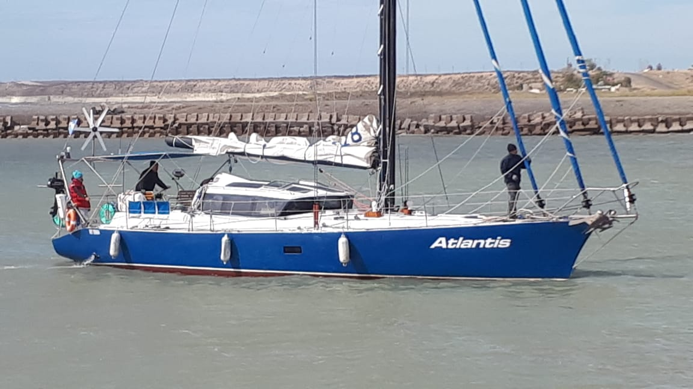
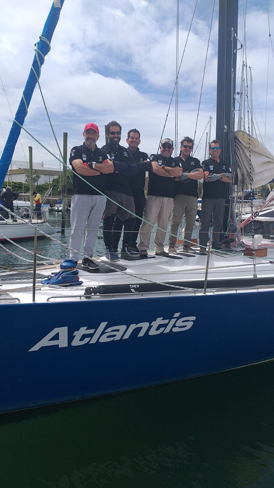
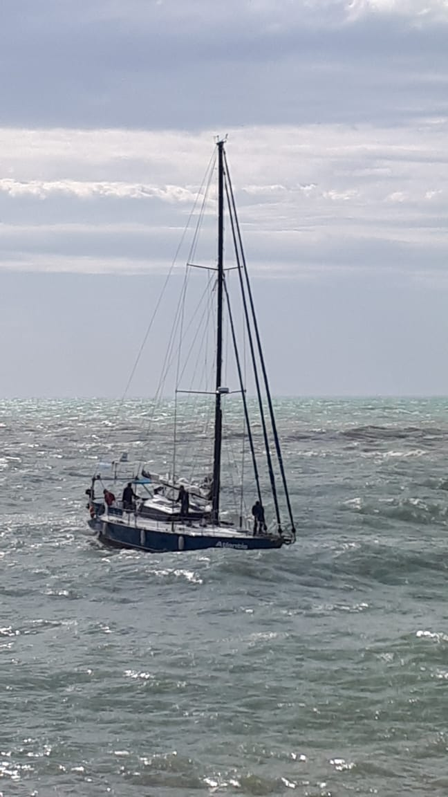
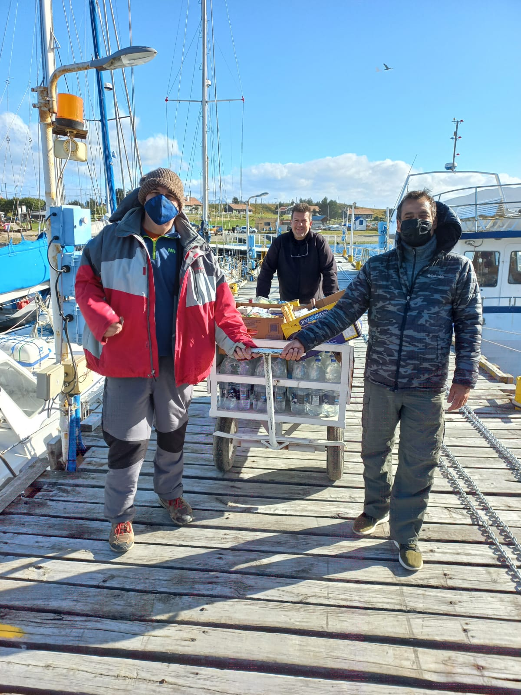

Bitácora visual
Imágenes del Atlantis
La historia también queda escrita en fotografías: el barco, los amigos, los preparativos y esos momentos que después terminan definiendo el viaje.







Apunte de bitácora
Un archivo para seguir completando
Esta colección queda alojada dentro del propio sitio. A medida que aparezcan nuevas fotos podemos organizarlas por etapas —preparativos, tripulación, navegación, escalas y paisajes— sin rehacer la estructura.